Changing a theme on Renku OS used to mean restarting your applications to see all of it. This work makes controls and fonts change in place, gives themes light and dark versions that can switch by the time of day, and lets apps follow along.
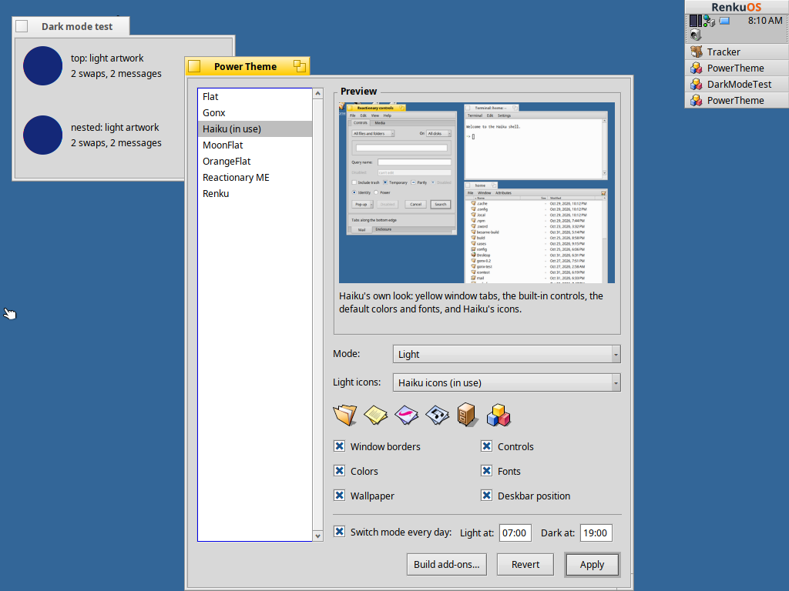
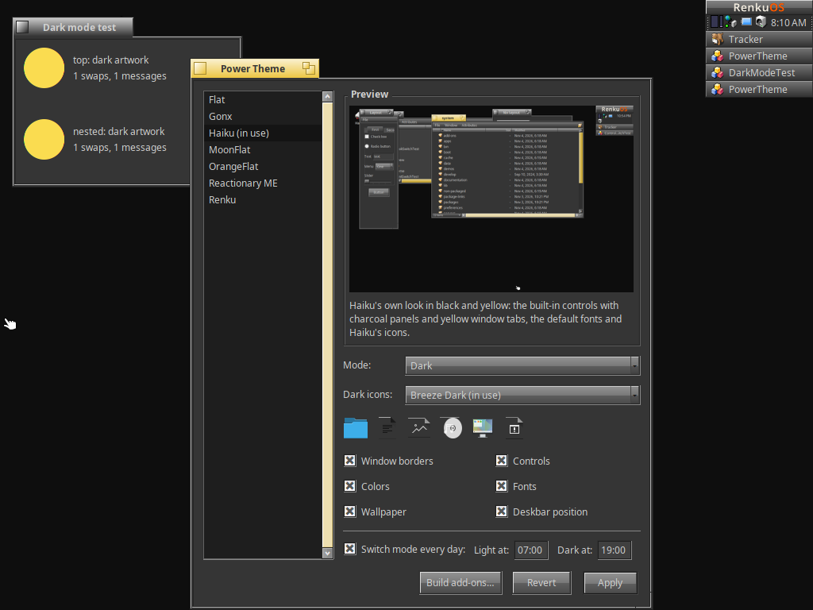
Haiku Dark HaikuDrag across the picture. One command switches between these two, with every window left open. The windows are the same ones, on Renku OS in a virtual machine.
Choosing a new control look now reaches every running application: buttons, sliders and menus redraw and reflow on the spot. An old look stays loaded until its app quits, because another thread may still be using it. Each look loads once, so the cost depends on how many different looks you use, not how many times you switch.
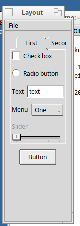
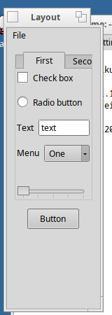
In review: #284 is ready, and #285 is a draft stacked on it.
Views follow the system font unless they chose their own, with family and size tracked separately. An app that set its own size keeps that size and still follows the family. A font it set outright stays as it is.
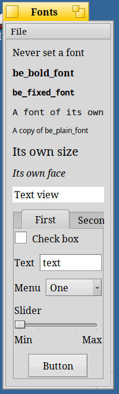
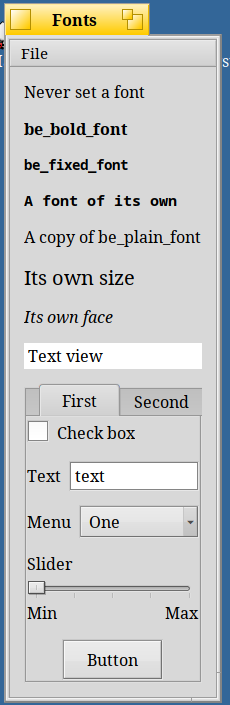
A theme can now say it's one version of another. The two appear as one row in Power Theme, with a Mode menu. Flat, Haiku and Reactionary ME come as pairs, and Haiku Dark is black and yellow, like DarkFlat.
variant of = Haiku mode = dark powertheme --mode=toggle
On Power Theme's main branch, not in a release yet.
Pick a time for light and a time for dark, and the theme in use follows them every day. A computer started at night comes up dark, and a theme you switch by hand stays until the next scheduled time.
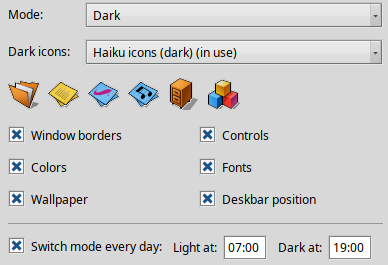
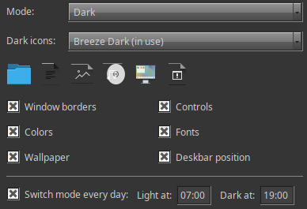
powertheme --schedule=07:00,19:00
On Power Theme's main branch, not in a release yet.
Each version of a theme can have its own icons, chosen in the window or from the command line, and a mode switch brings them along. Nothing changes unless you've applied icons with a theme, so icons you set separately stay where they are.
powertheme --light-icons=haiku --dark-icons=breeze-dark
Making this work uncovered a catch. Linux icon themes usually tell light from dark with a small stylesheet and currentColor, which Power Theme's SVG renderer doesn't read, so both versions came out identical. Power Theme now writes those colours into each icon before drawing it. Before the fix, none of the roughly 200 icons differed between Breeze and Breeze Dark; now 8 do, including folders, programs and volumes.
That small number is the honest picture: dark icon themes mostly change their one-colour icons, so colourful folders and documents can look the same in both.
Breeze Dark is a placeholder. It's here as a proof of concept that the mechanism works, and Power Theme doesn't include it. A dark version of the Haiku icons is planned to take its place.
On Power Theme's main branch, not in a release yet.
Like prefers-color-scheme on the web, this gives an app one question to ask and a message telling it when to ask again, so it can swap its icons or artwork. The answer comes from the colours actually on screen, so it can't disagree with them and existing themes work unchanged.
void MyView::MessageReceived(BMessage* message)
{
if (message->what == B_COLORS_UPDATED)
_UseArtwork(ui_is_dark() ? fDarkIcon : fLightIcon);
BView::MessageReceived(message);
}
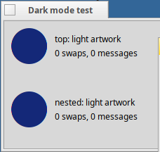
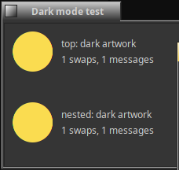
Open for review: #289. No bundled app uses it yet.
The Deskbar's navy logo was hard to see on dark menus. It now has a light version and swaps by comparing the menu's text with its background.
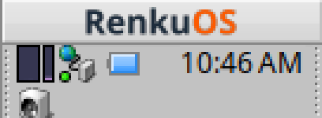
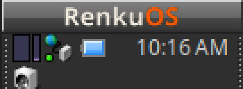
Open for review: #288.
Power Theme checks the running system for these changes. Where they aren't there, it applies themes as before and asks you to restart your apps, instead of promising something the system can't do. Light and dark versions and the schedule work there too.
On full x86_64 Renku images in VirtualBox, and on Haiku R1/beta6. The Renku changes also pass their project's build and boot checks on x86_64 and x86_gcc2.
| Result | What was done |
|---|---|
| 2,300 swaps | Control looks switched as fast as possible, with four threads using the look and windows redrawing every 16 ms. No crashes. |
| 480 updates | System font changes, with app_server's font state checked for stability throughout. |
| 0 and 3 pixels | Difference between a window switched live and one started fresh, for Be and Flat. The comparison also caught a slider that was 1,559 pixels off, since fixed. |
| Live switch | The schedule changed theme and icons at the set minute, with Power Theme open. It also caught up at start, kept a manual change and restarted after a reboot. |
| Exact revert | After 20 rounds of applying and reverting icons, the file count stayed the same. A separate check found every icon restored exactly. |